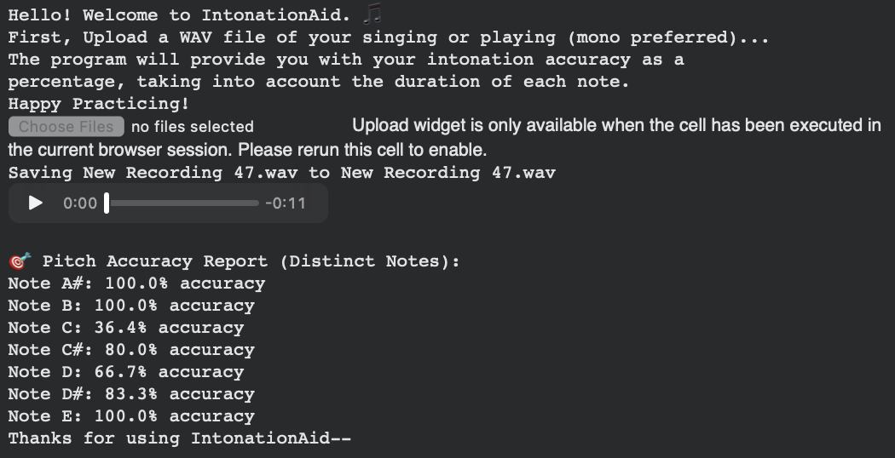

IntonationAid
A beginner friendly program for analyzing intonation accuracy.

Background/Origin
Intonation is one of the very things that "get" me everytime. Whether it be during practice, recordings or performances, I focus on the musicality and "performance' and often neglect intonation, and don't strain my ears to listen for it. Being principal cellist of my school's orchestra and SFSYO, I have seen fellow cellists encounter similar situations, even more so in cellists I have mentored and taught. I decided to create an IntonationAid program that tells the user their accuracy in percentage. This will inform us musicians whether or not our intonation accuracy is improving...or deteriorating.
Coding IntonationAid
IntonationAid is a signal-processing tool that evaluates pitch accuracy from an audio recording of singing or instrumental performance. I used librosa’s pYIN algorithm to extract a continuous fundamental frequency contour from a WAV file, converts frequencies to musical notes via a logarithmic MIDI mapping, and measures intonation error in cents relative to the nearest semitone. This groups frames into distinct note events, applies a majority-vote criterion to determine whether each sustained note was in tune, and produces a per-note accuracy report weighted by performance duration. The tool then outputs a structured JSON summary of results, providing performers with quantitative, actionable feedback on their intonation from 0 to 100% accurate.
Final Notes / Next Steps
My next step for this program would be scaling this into an app that all musicians can use. One downside to quantitatively measuring intonation is that it is dificult to quantify just and pythagorean tuning, as it depends on many factors. In the baroque era, notes were played multiple half steps down from the contemporary 441 Hz, and tuning conventions vary across countries as well. Furthermore, when comparing one's intonation to a chamber mates' it will greatly depend on the position of the note in the chord as well. This is not to say that it is not possible to quantify these measurements, but perhaps this program would be most useful as a starter--something to make ourselves aware of the sounds we produce from our instruments.